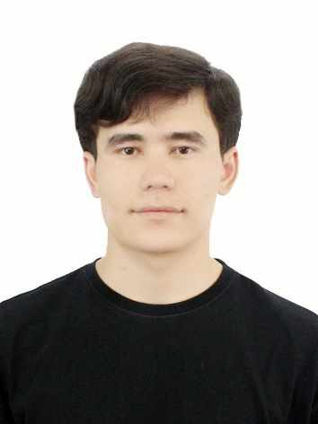

I am a dedicated MERN Stack Developer with expertise in building and deploying robust, scalable web applications. My skill set encompasses the entire development lifecycle, from designing interactive and responsive user interfaces with React to developing secure and efficient server-side logic with Node.js and Express.js. I am proficient in managing data using MongoDB and adept at using RESTful APIs to connect the front-end and back-end seamlessly. I am passionate about writing clean code and am always eager to tackle new challenges in the world of JavaScript-driven development.
As a fourth-year Information Technologies student at Bukhara Innovation Technologies University, I am honing my expertise in software development and system design. My studies provide the theoretical backbone for my practical skills in modern web technologies, and I am eager to transition into a professional MERN Stack Developer role upon graduation.
My path to technology is non-traditional but deeply enriching. While completing my degree in Information Technologies, I worked as a dispatcher, a high-pressure role that taught me invaluable soft skills. I learned to communicate with clarity, manage complex logistics in real-time, and remain calm and solution-oriented under pressure. For the past four years, my time in Russia has further broadened my perspective, enhancing my adaptability and cross-cultural communication skills. I am now equipped with a powerful combination: the technical hard skills of a MERN Stack developer, capable of building applications that solve real-world problems, and the proven soft skills to collaborate effectively in any team. I am ready to apply this unique blend to create technology that makes a tangible difference.